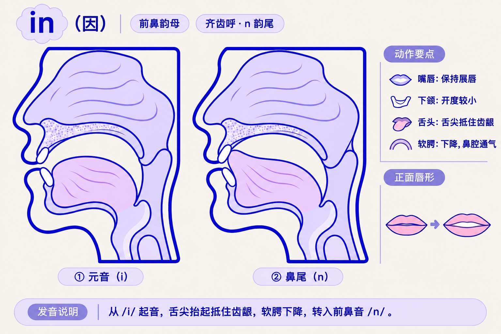

从拼音学起
先认识一个音节怎样组成，再分别看清声母、韵母和整体认读音节。点击字母本身，就可以查看图解并听标准发音示范。
声母
y、w 也有对应的发音图解；同时用于零声母音节的拼写与音节分隔。
韵母
韵母可以单独构成音节，也可以接在声母后面。
发音图解in
01 / 02

当前展示中性口腔示意；已完成的正式图解会在选择对应韵母时自动显示。
整体认读音节
教学中通常把下面 16 个音节作为一个整体直接认读，不在这里拆成声母和韵母练习。
zhichishiri
zicisiyi
wuyuyeyue
yuanyinyunying
接下来，
把声音写正确
认识声母和韵母之后，还要知道声调写在哪里、零声母音节怎样改写，以及什么时候需要隔音符号。
拼音书写规范
先记住五条最常用的规则。这里讲的是怎样写，具体发音示范将在后续统一接入。
标调规则
有 a 在给 a 戴，没 a 在 o、e 戴；要是 i、u 一起来，谁在后面给谁戴。
小贴士：i 标调时，去掉上方的小点，例如 nǐ。
y、w 改写规则
零声母音节需要按 i、u、ü 的拼写规则改写。
小贴士：i 开头时使用 y，例如 ian 写作 yan，不能写成 yian；ü 开头时加 y 并省去两点；u 开头时使用 w。
j、q、x、y 与 ü
j、q、x、y 和 ü 相拼，书写时省略 ü 的两点。
小贴士：省去的是书写符号，读音仍然是 ü，例如 ju、qu、xu、yu。
整体认读音节
16 个整体认读音节作为完整音节直接认读。
小贴士：教学中不把它们拆开拼读；yan 不属于整体认读音节，它只是零声母音节的特殊书写形式。
隔音符号
a、o、e 开头的音节接在其他音节后面，界限容易混淆时使用隔音符号。
小贴士：例如 pí’ǎo（皮袄），隔音符号让两个音节的边界更清楚。